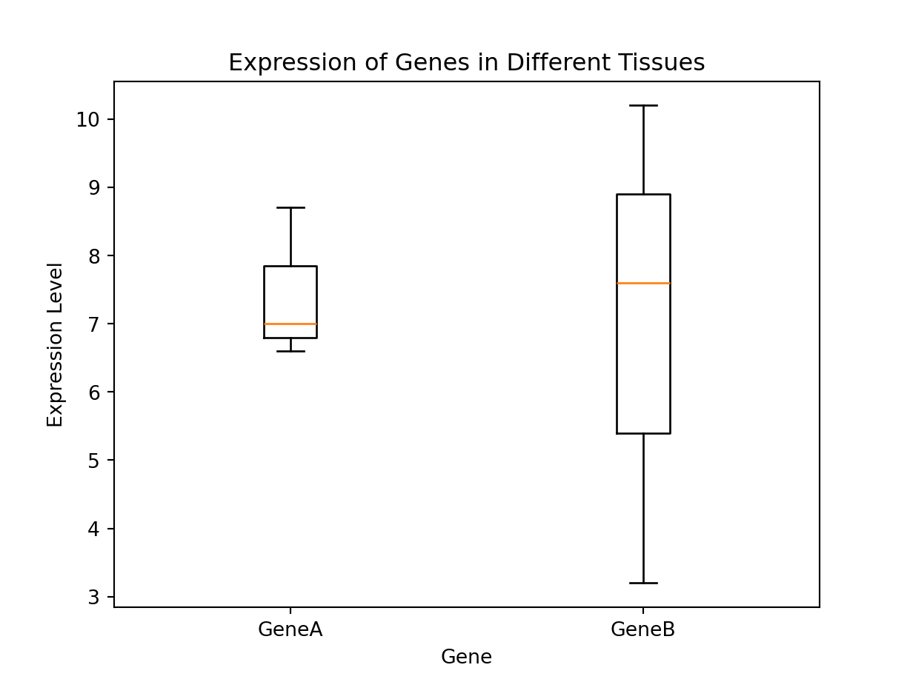
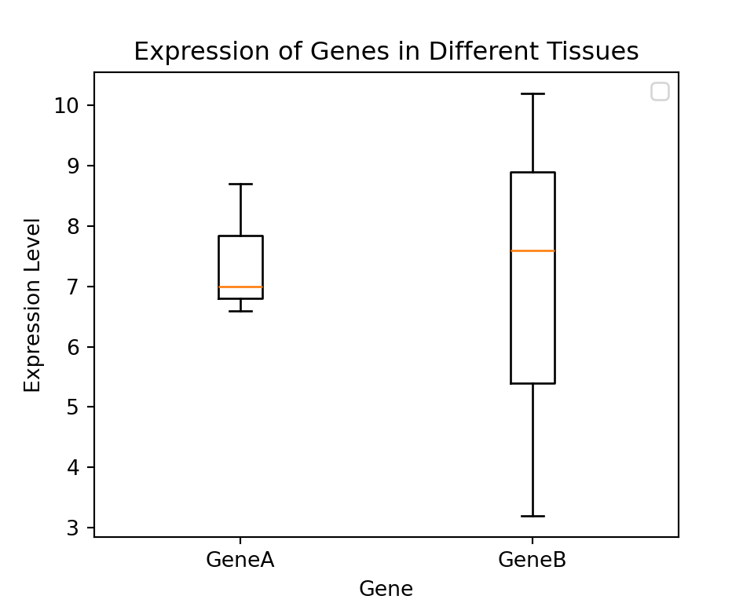
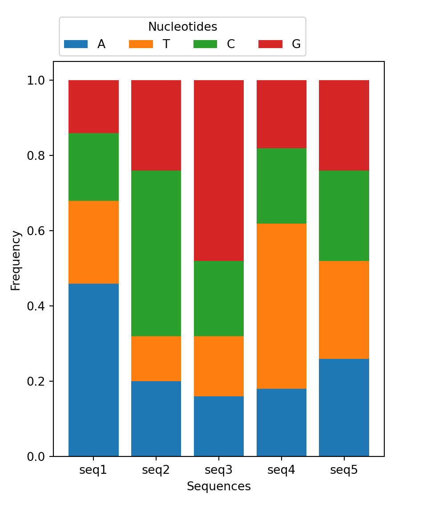

# round(number, ndigits=None)
x = round(number = 5.76543, ndigits = 2)
print(x)5.77At the end of this class, you will be able to:
Remembering some of lesson 1.
A function stores a piece of code that performs a certain task, and that gets run when called. It takes some data as input (parameters that are required or optional), and returns an output (that can be of any type).
We already learned how to run a predefined function in the last lesson. You need to write its name followed by parenthesis. Parameters are added inside the parenthesis as follow:
# round(number, ndigits=None)
x = round(number = 5.76543, ndigits = 2)
print(x)5.77To get more information about a function, use the help() function.
We will now learn how to create our own function.
In python, a function is declared with the keyword def followed by its name, and the arguments inside parenthesis. The next block of code, corresponding to the content of the function, must be indented. The output is defined by the return keyword.
def hello(name):
"""Presenting myself."""
presentation = "Hello, my name is {0}.".format(name)
return presentationtext = hello(name = "Valentine")
print(text)Hello, my name is Valentine.As you may have noticed, you can also add a description of the function directly after the function definition. It is the message that will be shown when running help(). As it can be along text over multiple lines, it is common to put it inside triple quotes """.
help(hello)Help on function hello in module __main__:
hello(name)
Presenting myself.You can have several arguments. They can be mandatory or optional. To make them optional, they need to have a default value assigned inside the function definition, like so:
def hello(name, french = True):
"""Presenting myself."""
if french:
presentation = "Bonjour, je m'appelle {0}."
else:
presentation = "Hello, my name is {0}."
return presentation.format(name)The parameter nameis mandatory, but french is optional.
hello("Valentine")"Bonjour, je m'appelle Valentine."hello(french = False)hello() missing 1 required positional argument: 'name'Reminder: if you provide the parameters in the exact same order as they are defined, you don’t have to name them. If you name the parameters you can switch their order. As good practice, put all required parameters first.
hello(french = False, name = "Valentine")'Hello, my name is Valentine.'hello("Valentine", False)'Hello, my name is Valentine.'If no return statement is given, then no output will be returned, but the function will still be run.
def hello(name):
"""Presenting myself."""
print("We are inside the 'hello()' function.")
presentation = "Hello, my name is {0}.".format(name)print(hello("Valentine"))We are inside the 'hello()' function.
NoneThe output can be of any type. If you have a lot of things to return, you might want to return a list or a dict for example.
def multiple_of_3(list_of_numbers):
"""Returns the number that are multiple of 3."""
multiples = []
for num in list_of_numbers:
if num % 3 == 0:
multiples.append(num)
return multiples
multiple_of_3(range(1, 20, 2))[3, 9, 15]This could be written as a one-liner.
def multiple_of_3(list_of_numbers):
"""Returns the number that are multiple of 3."""
multiples = [num for num in list_of_numbers if num % 3 == 0]
return multiples
multiple_of_3(range(1, 20, 2))[3, 9, 15]Write a function called nucl_freq to compute nucleotide frequency of a sequence. Given a sequence as input, it outputs a dictionnary with keys being the nucleotides A, T, C and G, and values being their frequency in the sequence.
With the input given below, the output should be:
def ...
# Your code here
nucl_freq("ATTCCCGGGG"){'T': 0.2, 'A': 0.1, 'C': 0.3, 'G': 0.4}It is possible to handle errors (in python, they are also called exceptions), using the following statements:
try to test a block of code for errorsexcept to handle the errorelse to excute code if there is no errorfinally to excute code, regardless of the result of the try and except blocks# The try block will generate an exception, because some_undefined_variable is not defined:
try:
print(some_undefined_variable)
except:
print("Oops... Something went wrong") Oops... Something went wrong# Without the try block, the program will crash and raise an error:
print(some_undefined_variable)name 'some_undefined_variable' is not definedtry:
print(some_undefined_variable)
except:
print("Oops... Something went wrong")
else:
print("Nothing went wrong")
finally:
print("The 'try except' is finished") Oops... Something went wrong
The 'try except' is finishedHere is a table of some of the built-in exceptions in python.
| Exception | Description |
|---|---|
IndexError |
Raised when the index of a sequence is out of range. |
KeyError |
Raised when a key is not found in a dictionary. |
KeyboardInterrupt |
Raised when the user hits the interrupt key (Ctrl+c or Delete). |
NameError |
Raised when a variable is not found in the local or global scope. |
TypeError |
Raised when a function or operation is applied to an object of an incorrect type. |
ValueError |
Raised when a function receives an argument of the correct type but of an incorrect value. |
RuntimeError |
Raised when an error occurs that do not belong to any specific exceptions. |
Exception |
Base class of exceptions. |
You can use them to be more specific about the type of exception occurring.
try:
print(some_undefined_variable)
except NameError:
print("A variable is not defined")
except:
print("Oops... Something went wrong")
else:
print("Nothing went wrong")
finally:
print("The 'try except' is finished") A variable is not defined
The 'try except' is finishedYou can also use them to throw an exception if a condition occurs, by using the raise keyword.
x = "hello"
try:
if not isinstance(x, int):
raise TypeError("Only integers are allowed")
if x < 0:
raise ValueError("Sorry, no numbers below zero")
print(x, "is a positive integer.")
except NameError:
print("A variable is not defined")
else:
print("Nothing went wrong")
finally:
print("The 'try except' is finished") Only integers are allowedLet’s make our previous function even better by adding some exception handling. Raise a TypeError if the input is not a string. Raise a ValueError if the input string contains something else than the nucleotides A, C, T, G.
With the input given below, the output and errors should be:
def ...
# Your code here
nucl_freq(5474)
nucl_freq("ATTCXCCGGGG")
nucl_freq("ATTCCCGGGG")Input must be a string.Input string must only contain characters A, C, T or G.{'T': 0.2, 'A': 0.1, 'C': 0.3, 'G': 0.4}There are some interesting ways to get input from the user:
input() receives input from the keyboard. This means that the input is defined while the python script is being executed.sys.argv takes arguments provided in command line after the name of the program. This means that the input is defined before the python script is being executed.argparse is similar to sys.argv, with the advantage of being able to give specific names to arguments.Python stops executing when it comes to the input() function, and continues when the user has given some input.
In a file called username-1.py, write the following:
username = input("Enter username: ")
print("Username is: " + username)Then in the terminal, run:
python username-1.py You should be asked, in command line, to enter a username. When you write it, and press Enter, it gets printed.
Enter username: vgilbartUsername is: vgilbartTo use sys.argv you need to import a module called sys. It is part of the standard python library, so you should not have to install anything in particular.
In a file called username-2.py, write the following:
import sys
print("Username is: " + sys.argv[1])Then in the terminal, run:
python username-2.py vgilbartArguments are given in command line, seperated by [space].
Username is: vgilbartWhat is the type of sys.argv? Remember that in python index begins at 0. What do you think is sys.argv[0]? Verify!
Also, what happens if you run python username-2.py valentine gilbart ?
Just like for sys, you need to import argparse.
In a file called username-3.py, write the following:
import argparse
parser = argparse.ArgumentParser()
parser.add_argument('--username', action="store")
args = parser.parse_args()
print("Username is: " + args.username)Then in the terminal, run:
python username-3.py --username vgilbartArguments are given in command line, but they have specific names.
argparse is a very useful module when creating programs! You can easily specify the expected type of argument, whether it is optional or not, and create a help for your script. Check their tutorial for more information.
The key function to work with files in open(). It has two parameters file and mode.
# Write the correct path for you!
fasta_file = '../exercise/data/example.fasta'
f = open(fasta_file, mode = 'r')The modes can be one of the following:
| Mode | Description |
|---|---|
r |
Opens a file for reading, error if the file does not exist (default) |
a |
Opens a file for appending, creates the file if it does not exist |
w |
Opens a file for writing, creates the file if it does not exist |
x |
Creates the specified file, returns an error if the file exists |
The open() function returns a file object, which has a read() method for reading the content of the file:
print(f.read())>seq1
TTAGCTAAATAGCTAGCAAACTAGCTAGCTAAAAAAAAAACTAGCTAGCT
>seq2
ATGCCAGCCAGCCAGCCAGCCAGCTCGCTCGCTCGCCAGCCAGCTAGCTA
>seq3
CCGGGCGGTCGATGGATGGAGGGAGCGAGCGATCGATCGGTCGATCGGTG
>seq4
GATCGATCGATCTTTTTATCGATCGATTGTTCTTTCGATCGTTCTATCGA
>seq5
ACGTACGTACGTACGTACGTACGTACGTACGTACGTACGTACGTACGTATThe parameter size = can be added to specify the number of bytes (~ characters) to return.
# We need to re-open it because we have already parsed the whole file
f = open(fasta_file, mode = 'r')
print(f.read(2))>sYou can return one line by using the .readline() method. By calling it two times, you can read the two first lines:
f = open(fasta_file, mode = 'r')
print(f.readline())>seq1print(f.readline())TTAGCTAAATAGCTAGCAAACTAGCTAGCTAAAAAAAAAACTAGCTAGCTBy looping through the lines of the file, you can read the whole file, line by line:
for i, line in enumerate(f):
print(i, line) 0 >seq2
1 ATGCCAGCCAGCCAGCCAGCCAGCTCGCTCGCTCGCCAGCCAGCTAGCTA
2 >seq3
3 CCGGGCGGTCGATGGATGGAGGGAGCGAGCGATCGATCGGTCGATCGGTG
4 >seq4
5 GATCGATCGATCTTTTTATCGATCGATTGTTCTTTCGATCGTTCTATCGA
6 >seq5
7 ACGTACGTACGTACGTACGTACGTACGTACGTACGTACGTACGTACGTATIt is a good practice to close the file when you are done with it.
f.close() In some cases, changes made to a file may not show until you close the file.
A common syntax to handle files that you might encounter is:
with open(fasta_file, 'r') as f:
print(f.readline())>seq1This code is equivalent to
f = open(fasta_file, 'r')
try:
print(f.readline())
finally:
f.close()>seq1The with statement is an example of a context manager, i.e. it allows to allocate and release resources precisely, by cleaning up the resources once they are no longer needed.
To write into a file, you must have it open under a w, a mode.
Then, the method write() can be used.
txt_file = "../exercise/data/some_file.txt"
f = open(txt_file, "w")
f.write("Woops! I have deleted the content!\n")35
f.close()
# Read the current content of the file
f = open(txt_file, "r")
print(f.read()) Woops! I have deleted the content!
Be very careful when opening a file in write mode as you can delete its content without any way to retrieve the original file!
As you may have noticed, write() returns the number of characters written. You can prevent it from being printed by assigning the return value to a variable that will not be used.
f = open(txt_file, "a")
_ = f.write("Now the file has more content!\n")
f.close()
# Read the current content of the file
f = open(txt_file, "r")
print(f.read()) Woops! I have deleted the content!
Now the file has more content!You must specify a newline with the character:
\n in Linus/MacOS\r\n in Windows\r in MacOS before XPython has a built-in package called os, to interact with the operating system.
import os
print("Current working directory:", os.getcwd()) Current working directory: /Users/gilbartv/Documents/git/python-intro/lectureos.chdir('../')
print("Current working directory:", os.getcwd()) Current working directory: /Users/gilbartv/Documents/git/python-introHere are some useful functions from the os package.
| Function | Description |
|---|---|
getcwd() |
Returns the current working directory |
chdir() |
Change the current working directory |
listdir() |
Returns a list of the names of the entries in a directory |
mkdir() |
Creates a directory |
mkdirs() |
Creates a directory recursively |
A regular expression is a sequence of characters that forms a search pattern.
Python has a built-in package called re, to work with regular expressions.
import re
x = re.findall("hello", "hello world, hello you!")
print(x)['hello', 'hello']Here are some useful functions from the re package.
| Function | Description |
|---|---|
findall() |
Returns a list containing all matches |
search() |
Returns a Match object if there is a match anywhere in the string |
split() |
Returns a list where the string has been split at each match |
sub() |
Replaces one or many matches with a string |
To be more specific about a sequence search, regular expression uses metacharacters (i.e characters with sepecial meaning)
| Metacharacter | Description | Example |
|---|---|---|
| [] | A set of characters | [a-m] |
| \ | Signals a special sequence (can also be used to escape special characters) | \n |
| . | Any character (except newline character) | he..o |
| ^ | Starts with | ^hello |
| $ | Ends with | hello$ |
| * | Zero or more occurrences | he.*o |
| + | One or more occurrences | he.+o |
| ? | Zero or one occurrences | he.?o |
| {} | Exactly the specified number of occurrences | he.{2}o |
| | | Either or | hello|bonjour |
| () | Captures and group | hello (.+) \1 in which \1 correspond to what is being captured in (.+) |
To build and test a regex, you can use regex101.com, or any website equivalent, in which you can write your regex, and some string to test, to see how it matches.
A Match Object is an object containing information about the search and the result.
x = re.search("hello .*",
"""
hello world
hello you
bonjour
""")
print(x)<re.Match object; span=(1, 12), match='hello world'>The Match object has methods used to retrieve information about the search, and the result:
.span() returns a tuple containing the start and end positions of the match..group() returns the part of the string where there was a matchprint(x.group()) hello worldFrom the list dna_sequences = ["ATGCGAATTCAC", "ATGAC", "ATGCCCGGGTAA", "ATGACGTACGTC", "ATGAGGGGTTCA"],
Extract all sequences that start with ATG and end with AC or AA.
Extract all sequences that contain either G or C repeated three times consecutively.
You should get the following results:
Sequences starting with 'ATG' and ending with 'AC' or 'AA':
['ATGCGAATTCAC', 'ATGAC', 'ATGCCCGGGTAA']Sequences containing 'G' or 'C' repeated three times consecutively:
['ATGCCCGGGTAA', 'ATGAGGGGTTCA']Create a program, that you can run on command line as follow ./analyse_fasta.py path/to/fasta/file path/to/output/file. It should:
Seq A C T G
seq1 0.1 0.2 0.3 0.4
seq2 0.4 0.3 0.2 0.1
...To make this easier, consider that the sequences in the fasta file are only in one line.
You might make good use of the method str.strip().
You can take as input the file in exercise/data/example.fasta you should get the same result as exercise/data/example.txt.
A python package contains a set of function to perform specific tasks.
A package needs to be installed to your computer one time.
You can install a package with pip. It should have been automatically installed with your python, to make sure that you have it you can run:
# In Linux/MacOS
python -m pip --version
# In Windows
py -m pip --versionIf it does not work, check out pip documentation.
To install a package called pandas, you must run:
# In Linux/MacOS
python -m pip install pandas
# In Windows
py -m pip install pandasTo get more information about pip, check out the full documentation.
Installing a package is done outside of the python interpreter, in command line in a terminal.
When you wish to use a package in a python script, you’ll need to import it, by writing inside of you script:
import pandasPandas is a package used to work with data sets, in order to easily clean, manipulate, explore and analyze data.
Pandas provides two types of classes for handling data:
Series: a one-dimensional labeled array holding data of any type such as integers or strings. It is like a column in a table.# If nothing else is specified, the values are labeled with their index number (starting from `0`).
myseries = pandas.Series([1, 7, 2], index = ["x", "y", "z"])
print(myseries)x 1
y 7
z 2
dtype: int64DataFrame: a two-dimensional data structure that holds data like a two-dimension array or a table with rows and columns. It is like a table.data = {
"calories": [420, 380, 390],
"duration": [50, 40, 45]
}
df = pandas.DataFrame(data)
print(df) calories duration
0 420 50
1 380 40
2 390 45You can also create a DataFrame from a file.
# Make sure this is the correct path for you! You are in the directory from where you execute the script.
df = pandas.read_csv('../exercise/data/sample.csv')
print(df) Gene Expression_Level Tissue
0 GeneA 8.7 Heart
1 GeneB 3.2 Heart
2 GeneA 7.0 Brain
3 GeneB 10.2 Brain
4 GeneA 6.6 Liver
5 GeneB 7.6 LiverYou get access to the index and column names with:
df.columnsIndex(['Gene', 'Expression_Level', 'Tissue'], dtype='object')df.indexRangeIndex(start=0, stop=6, step=1)You can rename index and column names:
df = df.rename(index={0: 'a', 1: 'b', 2: 'c', 3: 'd', 4: 'e', 5 : 'f'})
df.indexIndex(['a', 'b', 'c', 'd', 'e', 'f'], dtype='object')You can select rows:
# Select one row by its label
print(df.loc[['a']]) Gene Expression_Level Tissue
a GeneA 8.7 Heart# Select one row by its index
print(df.iloc[[0]]) Gene Expression_Level Tissue
a GeneA 8.7 Heart# Select several rows by labels
print(df.loc[['a','c']]) Gene Expression_Level Tissue
a GeneA 8.7 Heart
c GeneA 7.0 Brain# Select one row by index
print(df.iloc[[0,2]]) Gene Expression_Level Tissue
a GeneA 8.7 Heart
c GeneA 7.0 BrainYou can select columns:
# Select one column by label
df['Tissue'] # Seriesa Heart
b Heart
c Brain
d Brain
e Liver
f Liver
Name: Tissue, dtype: objectdf[['Tissue']] # DataFrame Tissue
a Heart
b Heart
c Brain
d Brain
e Liver
f Liver# Select several columns
df[['Gene','Expression_Level']] Gene Expression_Level
a GeneA 8.7
b GeneB 3.2
c GeneA 7.0
d GeneB 10.2
e GeneA 6.6
f GeneB 7.6# Select several columns by index
df.iloc[:,[0,1]] Gene Expression_Level
a GeneA 8.7
b GeneB 3.2
c GeneA 7.0
d GeneB 10.2
e GeneA 6.6
f GeneB 7.6You can select rows and columns as follows:
df.loc[['b'], ['Gene','Expression_Level']] Gene Expression_Level
b GeneB 3.2You can filter based on a condition as follows:
df[df['Expression_Level'] > 6] Gene Expression_Level Tissue
a GeneA 8.7 Heart
c GeneA 7.0 Brain
d GeneB 10.2 Brain
e GeneA 6.6 Liver
f GeneB 7.6 LiverTo explore the data set, use the following methods:
df.info()<class 'pandas.core.frame.DataFrame'>
Index: 6 entries, a to f
Data columns (total 3 columns):
# Column Non-Null Count Dtype
--- ------ -------------- -----
0 Gene 6 non-null object
1 Expression_Level 6 non-null float64
2 Tissue 6 non-null object
dtypes: float64(1), object(2)
memory usage: 364.0+ bytesdf.describe() Expression_Level
count 6.000000
mean 7.216667
std 2.358319
min 3.200000
25% 6.700000
50% 7.300000
75% 8.425000
max 10.200000df.head() Gene Expression_Level Tissue
a GeneA 8.7 Heart
b GeneB 3.2 Heart
c GeneA 7.0 Brain
d GeneB 10.2 Brain
e GeneA 6.6 Liverdf.sort_values(by="Gene") Gene Expression_Level Tissue
a GeneA 8.7 Heart
c GeneA 7.0 Brain
e GeneA 6.6 Liver
b GeneB 3.2 Heart
d GeneB 10.2 Brain
f GeneB 7.6 Liverdf['Expression_Level'].mean()7.216666666666666df.groupby("Gene")[['Expression_Level']].mean() Expression_Level
Gene
GeneA 7.433333
GeneB 7.000000To get more information on how to use pandas, check out:
Create a pandas DataFrame from the file containing the frequency of each nucleotide per sequences (exercise/data/example.txt).
Make sure that df.index contains the name of the sequences, and df.columns contains the nucleotides.
Use pandas.melt() (see the doc) to get the data in the following format:
nucl freq
Seq
seq1 A 0.46
seq2 A 0.20
seq3 A 0.16
seq4 A 0.18
seq5 A 0.26
seq1 T 0.22
seq2 T 0.12
...Get the mean value of all nucleotide frequencies.
Get the mean value of frequencies per nucleotide.
Filter to remove values of seq1.
Recompute the mean value of frequencies per nucleotide.
Matplotlib is a package to create visualizations in Python widely used in science.
To shorten the name of the package when we call its functions, we can import it as follows:
import matplotlib.pyplot as plt
df = pandas.read_csv('../exercise/data/sample.csv')
# The data for GeneA and GeneB is extracted from the DataFrame 'df'
serieA = df[df['Gene'] == 'GeneA']['Expression_Level']
serieB = df[df['Gene'] == 'GeneB']['Expression_Level']
# Create a new figure
fig = plt.figure()
# Create a boxplot showing the expression levels of GeneA and GeneB
plt.boxplot([serieA, serieB], # List of series
labels=['GeneA', 'GeneB']){'whiskers': [<matplotlib.lines.Line2D object at 0x155427dd0>, <matplotlib.lines.Line2D object at 0x15545e300>, <matplotlib.lines.Line2D object at 0x15545f3b0>, <matplotlib.lines.Line2D object at 0x15545f6b0>], 'caps': [<matplotlib.lines.Line2D object at 0x15545e5d0>, <matplotlib.lines.Line2D object at 0x15545e8a0>, <matplotlib.lines.Line2D object at 0x15545f9b0>, <matplotlib.lines.Line2D object at 0x15545fcb0>], 'boxes': [<matplotlib.lines.Line2D object at 0x15508fc80>, <matplotlib.lines.Line2D object at 0x15545f080>], 'medians': [<matplotlib.lines.Line2D object at 0x15545eb70>, <matplotlib.lines.Line2D object at 0x15545ff80>], 'fliers': [<matplotlib.lines.Line2D object at 0x15545ee10>, <matplotlib.lines.Line2D object at 0x155494290>], 'means': []}# Set the label for the x-axis
plt.xlabel('Gene')Text(0.5, 0, 'Gene')# Set the label for the y-axis
plt.ylabel('Expression Level')Text(0, 0.5, 'Expression Level')# Set the title of the plot
plt.title('Expression of Genes in Different Tissues')Text(0.5, 1.0, 'Expression of Genes in Different Tissues')# Display the boxplot
plt.show()
# Save the plot as a PNG file with a resolution of 300 dots per inch (dpi)
# The file will be saved in the specified location
fig.savefig('../exercise/data/my-figure.png', dpi=300)The following code is equivalent.
# Create a new figure
fig, ax = plt.subplots(1, figsize=(5, 4))
ax.boxplot([serieA, serieB], # List of series
labels=['GeneA', 'GeneB']){'whiskers': [<matplotlib.lines.Line2D object at 0x1554ad5b0>, <matplotlib.lines.Line2D object at 0x1552acb90>, <matplotlib.lines.Line2D object at 0x1554ac8f0>, <matplotlib.lines.Line2D object at 0x158a45e50>], 'caps': [<matplotlib.lines.Line2D object at 0x1554977a0>, <matplotlib.lines.Line2D object at 0x155496ab0>, <matplotlib.lines.Line2D object at 0x155496960>, <matplotlib.lines.Line2D object at 0x155494200>], 'boxes': [<matplotlib.lines.Line2D object at 0x1554ad370>, <matplotlib.lines.Line2D object at 0x1554aff50>], 'medians': [<matplotlib.lines.Line2D object at 0x155495df0>, <matplotlib.lines.Line2D object at 0x155497560>], 'fliers': [<matplotlib.lines.Line2D object at 0x1554964e0>, <matplotlib.lines.Line2D object at 0x155496690>], 'means': []}ax.set_xlabel('Gene')Text(0.5, 0, 'Gene')ax.set_ylabel('Expression Level')Text(0, 0.5, 'Expression Level')ax.set_title('Expression of Genes in Different Tissues')Text(0.5, 1.0, 'Expression of Genes in Different Tissues')ax.legend()<matplotlib.legend.Legend object at 0x1554e7c50>
No artists with labels found to put in legend. Note that artists whose label start with an underscore are ignored when legend() is called with no argument.plt.show()
# Save the plot as a PNG file with a resolution of 300 dots per inch (dpi)
# The file will be saved in the specified location
fig.savefig('../exercise/data/my-figure-2.png', dpi=300)The first way of plotting is function-oriented, and the second is object-oriented. You might encounter both styles of coding.

Many visualizations are available (static, animated, interactive). For more information, check out:
Create a script that gets nucleotide frequency data from a file in the format of exercise/data/example.txt, and visualizes it using Matplotlib and Pandas.
Your script should read the data, create a stacked bar chart showing the nucleotide frequencies for each sequence, and label the axes appropriately. Here’s the expected plot:
<BarContainer object of 5 artists>
<BarContainer object of 5 artists>
<BarContainer object of 5 artists>
<BarContainer object of 5 artists>Text(0.5, 0, 'Sequences')Text(0, 0.5, 'Frequency')<matplotlib.legend.Legend object at 0x155427b90>
There are MANY packages available, here’s a short list of some that might interest you:
| Package | Usage | Example of usage |
|---|---|---|
| BioPython | Computational molecular biology | Sequence handling, access to NCBI databases |
| NumPy | Numerical arrays | Data manipulation, mathematical operations, linear algebra |
| Seaborn | High-level interface for drawing plots | Data visualization, statistical graphics |
| HTSeq | High throughput sequencing | Quality and coverage, counting reads, read alignment |
| Scanpy | Single-Cell Analysis | Preprocessing, visualization, clustering |
| SciPy | Mathematical algorithms | Clustering, ODE, Fourier Transforms |
| Scikit-image | Image processing | Image enhancement, segmentation, feature extraction |
| Scikit-learn | Machine learning | Classification, regression, clustering, dimensionality reduction |
| TensorFlow and PyTorch | Deep learning | Neural networks, natural language processing, computer vision |
Here are a couple of tips:
You can follow some free tutorials on:
Finally, you should able to use Github Copilot (AI coding assistant), as it is free for students: https://education.github.com/benefits.
A python conference organized by the AFPy (Association Francophone Python) is held in Strasbourg in the end of October 2024!
Here are some references and ressources that inspired this class: